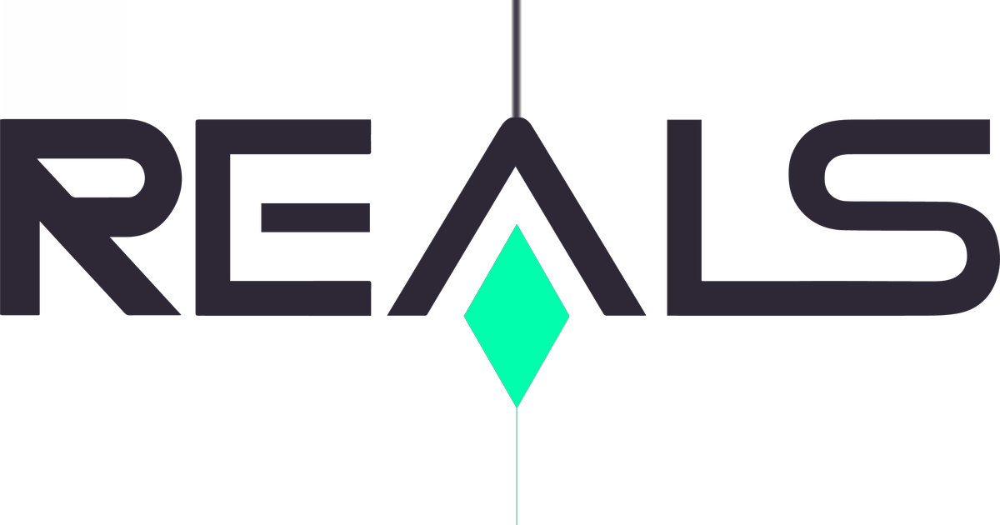

Permissão Legal das Casas de Apostas no Brasil
As casas de apostas são legais no Brasil desde a promulgação da Lei nº 13.756/2018. Essa legislação possibilitou a regulamentação das chamadas apostas de quota fixa, abrindo caminho para a operação de diversas plataformas de apostas esportivas online. Antes disso, o cenário brasileiro era restrito a modalidades como loterias e apostas hípicas. Agora, os cidadãos podem usufruir de um ambiente seguro, regulamentado e fiscalizado pelo Ministério da Fazenda.
A legalização das apostas esportivas visa não apenas atender à demanda crescente por entretenimento online, mas também fomentar a economia, gerar empregos, arrecadar tributos e fortalecer mecanismos de proteção ao consumidor.
Histórico das Apostas no Brasil
O Brasil possui uma trajetória singular no que se refere às apostas. Desde o século XX, o país experimentou períodos de permissão e proibição. Em 1946, os cassinos físicos foram proibidos, e durante décadas, o segmento ficou restrito às loterias estatais e ao turfe (apostas em corridas de cavalos).
Com o avanço da tecnologia e a crescente popularização da internet, as apostas esportivas online se consolidaram como uma tendência mundial. O Brasil, para acompanhar o movimento internacional e combater a ilegalidade, regulamentou o setor, permitindo que as apostas sejam realizadas dentro de um ambiente jurídico sólido e transparente.
O Mercado Atual de Apostas no Brasil
O mercado de apostas esportivas online no Brasil movimenta bilhões de reais anualmente, sendo considerado um dos segmentos mais promissores da indústria do entretenimento digital. As casas de apostas online oferecem aos apostadores brasileiros uma variedade de opções que incluem desde apostas esportivas em campeonatos nacionais e internacionais até jogos de cassino online como roleta, blackjack e caça-níqueis.
Com o PIX e outras formas de pagamento digital, as transações se tornaram mais rápidas e seguras, facilitando o acesso e impulsionando o crescimento desse segmento. A tendência é que o mercado continue a crescer nos próximos anos, acompanhando a evolução tecnológica e o aumento da adesão dos brasileiros às plataformas de apostas esportivas online.
O que são as Bets? Como Funcionam as Casas de Apostas
As bets, termo popular que designa as casas de apostas online, são ambientes virtuais onde os usuários podem apostar em diversos eventos esportivos e jogos de cassino. Entre os esportes mais populares para apostas no Brasil estão o futebol, o basquete, o tênis, o MMA e os eSports.
O funcionamento é simples: o apostador realiza um cadastro na plataforma, efetua um depósito e escolhe o evento e o tipo de aposta, que pode variar entre apostas simples, múltiplas e ao vivo. As odds (cotações) determinam o valor potencial do prêmio. Caso o palpite esteja correto, o apostador poderá sacar seus ganhos rapidamente, utilizando métodos como o PIX.
Como Garantir Segurança ao Apostar Online
A segurança nas apostas esportivas online é fundamental. Para garantir uma experiência segura e tranquila, siga estas recomendações:
- Verifique se a casa possui licença válida emitida por órgãos reguladores competentes.
- Prefira sites com o domínio .bet.br, indicando registro nacional e conformidade com a legislação.
- Assegure-se de que o site utiliza criptografia SSL (HTTPS), protegendo seus dados financeiros.
- Leia avaliações de outros usuários e consulte plataformas de reclamação como o Reclame Aqui.
- Evite compartilhar suas credenciais com terceiros e opte por métodos de pagamento seguros como o PIX.
Jogo Responsável: Aposte com Consciência
A prática do jogo responsável é essencial para quem deseja aproveitar as apostas online de forma saudável. As casas de apostas oferecem mecanismos para ajudar o apostador a manter o controle, como limites de depósito, autoexclusão e ferramentas de monitoramento de comportamento.
- Defina previamente um orçamento para apostas e não ultrapasse esse limite.
- Lembre-se de que as apostas esportivas são uma forma de entretenimento, não um meio de ganhar dinheiro.
- Esteja atento a sinais de comportamento compulsivo e busque ajuda especializada se necessário.
- Informe-se sobre programas e instituições de apoio ao jogo responsável.
Principais Casas de Apostas Online no Brasil
| Logo | Casa de Apostas | Link |
|---|---|---|
| Betano | Visitar | |
| Sportingbet | Visitar | |
| Galera.bet | Visitar | |
| EstrelaBet | Visitar | |
|  | Reals | Visitar |
| UX | Visitar | |
| Bet365 | Visitar | |
| BRBet | Visitar | |
| Vera | Visitar | |
| QGBet | Visitar | |
| GeralBet | Visitar |
Estas são algumas das principais casas de apostas online com atuação no Brasil, reconhecidas pela confiabilidade, segurança e diversidade de opções para os apostadores brasileiros.
Conclusão: Apostas Online com Segurança e Consciência
O mercado de casas de apostas online no Brasil está consolidado e em pleno crescimento, oferecendo inúmeras oportunidades de entretenimento aos apostadores. Contudo, é imprescindível que as apostas sejam feitas com responsabilidade e dentro da legalidade.
Informar-se sobre a legislação vigente, escolher plataformas seguras, praticar o jogo responsável e manter o controle financeiro são atitudes essenciais para quem deseja usufruir das apostas esportivas online de maneira saudável e segura.